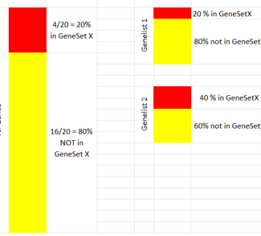

Pathway Analysis for metabolomics
Introduction and Objectives
Introducing Ourselves
Statistics & Bioinformatics and Nutrition & Metabolomics groups @ UB
Session objectives
Overview of Patwhay Analysis for Metabolomics
Introduce its components and
Go through some methods with some detail
Discuss some limitations and provide recomendations.
Introduce some tools for Pathway Analysis
Get a practical grasp of how to apply it.
Session Outline
Introducion and objectives
Metabolite lists: What do they mean
Information sources to support interpretation
Methods and Tools to extract information
The limitations of PwA. Some recommendations
Software tools for PwA
Practical session
Health, Disease and Pathways
Metabolism is a complex network of chemical reactions within the confines of a cell that can be analyzed in self-contained parts called pathways.
We often assume that “normal” metabolism is what happens in healthy state or, that disease can be associated with some type of alteration in metabolism.

Characterization of disease attempted studying how this disrupts pathways
So what is Pathway Analysis?
… any analytic technique that benefits from biological pathway or molecular network information to gain insight into a biological system. (Creixell et alt., Nature Methods 2015 (12 (7))
Pathway Analysis methods rely on high throughput information provided by omics technologies to:
- Contextualize findings to help understand biological processes
- Identify fetures associated with a disease
- Predict drug targets
- Understand how to intervene in disease1
- Conduct target literature searches
- Integrate diverse biological information
From samples to features lists
Bioinformatics workflows
From samples to features lists (2)
Metabolomics Workflows in MetaboAnalyst 5.0
Analysis yield metabolites lists

Metabolites lists are diverse:
- Truncated vs All the features analyzed
- Ordered vs unordered
- Only IDs vs IDs with difference measures
An open problem: Metabolites IDs
To be able to do Pathway Analysis, metabolites need to be mappable to their sources of information.
- Must be uniquely identifiable by names/IDs.
- Must be possible to link/relate these names/IDs with the corresponding IDs in the source of information we wish to rely.
This is far from possible for all metabolites.
Uniquely and unambiguosly naming all metabolites is, in the best of cases, “work in progress”.
The where to, now? question
Once a list of feature is obtained it can be studied on a one-by-one basis
Select some features for biochemical validation,
Map individual features to specific pathways,
Perform functional assays,
Do a literature search …
This will yield useful information, but
- It may be slow and resource-consuming
- It does not account for interaction between features.
And here comes Pathway Analysis
Pathway Analysis studies the list as a whole.
With this aim it combines:
- The list of features, with
- Pre-existing sources of information related to them
And, after some processing, it yields
- some type of scores about
- groups of features appearing to be significantly related with the process being studied.
How can we interpret these lists?
From Lists to Biology
Ontologies, Databases and Metabolite Sets
The elements of Pathways Analysis
Loosely speaking, to do Pathway Analysis one needs:
A list of features, characterizing a process.
A source of information about these features.
An algorithm to highlight relevant information by linking list and source.
A tool implementing the algorithm.
In this section, we focus on sources of information and on how to provide it to the algorithms.
Sources of information for PWA
Some common databases in Metabolomics
Ontologies, Databases et alt.
Although incomplete s.o.i are multiple and diverse.
- Ontologies: Structured vocabularies for categorizing and describing relationships within a domain. GO, ChEBI
- Pathway Databases: Detailed information about biological pathways and their the biological context. KEGG, Reactome, SMPDB.
- Compound Databases: Information on small molecules for identification and characterization of metabolites. HMDB, PubChem, LipidMaps, and MassBank
- And many more: Networks DBs, Spectral DBs, …
The Human Metabolome DB
- Detailed information about human metabolites, their structures, pathways, origins, concentrations, functions and reference spectra
- HMDB has 248,855 metabolites, 132,335 pathways, 3.1 million MS and NMR spectra, metabolite biomarker data on >600 diseases
- A resource established to provide reference metabolite values for human disease, human exposures & population health
- Captures both targeted and untargeted metabolomics (and exposomics) data
The Food Constituent Database
- Database of 70,000+ compounds found in 727 foods and their effects on flavour, aroma, colour and human health
- Comprehensive concentration information to ID foods that are rich in particular micronutrients
- Links chemistry to food types (biological species) to flavour, aroma, colour and human health
- Supports sequence, spectral, structure and text searches
The KEGG DB
- The “Go-to” Metabolic Pathway Database
- Has 535 “canonical” pathway diagrams or maps covering 5994 organisms for a total of 604,808 pathways
- ~170 metabolic pathways covering 18,553 compounds, includes many disease pathways (80), protein signaling (70) pathways, and biological process pathways (70)
- Metabolic pathways are highly schematized and mostly limited to catabolic and anabolic processes
Small Molecule Pathway Database
Nearly 48,900 hand-drawn small molecule pathways – 404 drug action pathways – 20,251 metabolic disease pathways – 27,876 metabolic pathways – 160+ signaling and other pathways
Depicts organs, cell compartments, organelles, protein locations, and protein quaternary structures
Maps gene chip & metabolomic data
Converts gene, protein or chemical lists to pathways or disease diagnoses
Obtaining Metabolite Sets
As described, PWA matches lists of metabolites with previously defined metabolite sets that characterize a process, a disease or a group.
Some sources of information (Ontologies, Pathways DBs) directly provide metabolite sets.
For compound DBs, Metabolite sets have to be built
- By manual curation
- Automatically (some type of clustering)
Metabolites Set libraries
Overview of MSEA’s metabolite set libraries
Metamap clusters
Chemical similarity clusters
Chemical Ontologies
Analysis Methods
Types of Pathway Analysis
Over-representation Analysis
Given
- A feature (metabolites) list (from some study).
- A collection of feature (metabolites) sets (…)
The goal is finding out if any of the feature sets surprisingly enriched in the feature list?
- Need to define “surprisingly” (statistics)
- Need to deal with test multiplicity?
Obtaining feature lists
Assessing “surprisingly”
Given a feature list, “fl”, and a feature set, “FS”, check if the % of genes in “fl” annotated in “FS” the same as the % of genes globally annotated in “FS”?
- If both percentages are similar \(\rightarrow\) No Enrichment.
- If the % of features in “FS” is greater in “fl” than in the rest of genes \(\rightarrow\) “fl” is enriched in “GS”

Example
Assess significance: Fisher test
- The examples shows two cases
- One where percentages are quite different
- Another where percentages are similar.
- How can we set a threshold to decide that the difference is “big enough” to call it “Enriched”
- Use Fisher Test or, equivalently,
- a test to compare proportions or
- a hypergeometric test.
Example 1: Surprisingly enriched
P-value small, odds-ratio high: List is surprisingly enriched in Feature Set
Example 2: Non-enriched
P-value high, odds-ratio around 1: List is not enriched in Feature Set
Summary: Recipe for ORA
- Define feature list (e.g. thresholding analyzed list ) and background list,
- Select feature sets to test for enrichment,
- Run enrichment tests and adjust for multiple testing
- Interpret your enrichments
- Publish! ;)
Posible problems with ORA
- No “natural” value for the threshold
- Possible loss of statistical power due to thresholding
- No resolution between significant signals with different strengths
- Weak signals neglected
- Different results at different threshold settings
- Based on the wrong assumption of independent feature (or feture group) sampling, which increases false positive predictions.